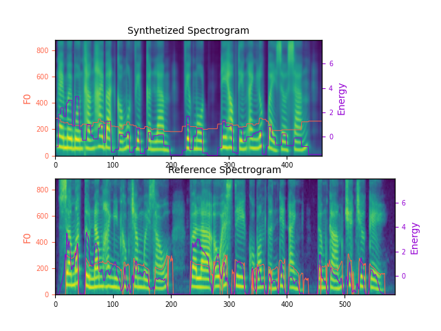

Calib-StyleSpeech: A Zero-shot Approach In Voice Cloning Of High Adaptive Text To Speech System With Imbalanced Dataset
Authors: Nguyen Tan Dat, Lam Quang Tuong, Nguyen Duc Dung
Authors: Nguyen Tan Dat, Lam Quang Tuong, Nguyen Duc Dung
|
Official open-sourced implementation: "signofthefour/calibstylespeech". Note: HiFi-GAN is used as vocoder. We trained this HiFi-GAN with our dataset of 2 standard voice for TTS for 425000 steps. Also, listen to the audios using headphones for better experience. AbstractVoiced by our Calib-StyleSpeech model using HiFi-GAN vocoder: In this article, we propose Calib-StyleSpeech, a novel end-to-end Text-to-Speech (TTS) system, which achieves a Zero-shot learning approach in cloning a new voice without using the meta-learning method. Our model uses a block to extract the style from the reference mel-spectrogram, embedding this style vector into the acoustic model to condition the hidden features. And then, training it with a multi-speaker dataset that still contains noise and resonant utterances. We also extract a content vector from this mel-spectrogram simultaneously with the style vector. This vector will imitate the hidden vector extracted from the phoneme sequence by the encoder of the acoustic model. The extracted content vector takes responsibility on calibrate the style vector by the Mutual Information (MI) constraint in order to eliminate the dependency between content and style representation space. Calib-StyleSpeech can synthesize a high fidelity voice with only 36 utterances (about 3 minutes) in training data. Furthermore, the experimental results prove that model can learn to speak in a new voice with only one small reference record (about 5 seconds) of the target voice without any fine-tune stage and get a competitive similarity score with another state-of-the-art while maintaining naturalness and intelligence. Illustration of mel-spectrogram and audio for seen speaker in training phase:Note: Calib-StyleSpeech model is considered. In this section we show the result of our proposed model after 400k training steps on seen voice. Text: Here are the match lineups for the Colombia Haiti match.  Seen voice during trainingNote: Female voice appear at training time but the utterance is unseen
Custom voiceNote that each of following reference voice is unseen during training phase. In this section, with each voice, we compare result with StyleSpeech and MetaStyleSpeech on one-shot task. Mean, there is no fine-tuning step in synthesizing the required voice. Note: Because of the imbalanced of dataset, the demo of man of old man is lack of quality.
Speed ControllableNote: The smaller speed ratio the faster utterance
|